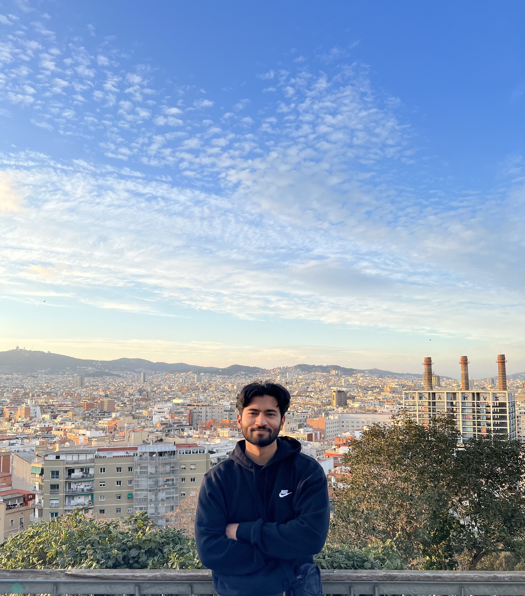

Mohammed Azad's Map Portfolio
Spring 2023 | AA191A - Web Development and GIS for Social Change
|  |
About Me 🙋🏽♂️Hello! My name is Mohammed Azad, and I am a fourth year Public Affairs undergrad and a second year transfer. Born and raised in Los Angeles, I've lived in Koreatown for a majority of my life. My experiences growing up in this city have shaped my goals and passion for positive social change. I've started to embark on this change profesionally through my work within the City government. I'm currently an intern at the Civil + Human Rights and Equity Department, and have past experience interning with the LA City Controller's Office and the Mayor's Office. As a critical digital map maker, I hope to gain the technical and communication skills needed to make social change with digital products. I've realized that even as we have enormous amounts of information at our disposal, much of this information needs to be demystified and presented in a clean fashion. My hope is that we learn how to present that information effectively so that communities/decision makers have the best information they need to make informed solutions. |
Hobbies & Interests 🕺🏾
|
Top 5 Places I Want to Visit 🏙️
|